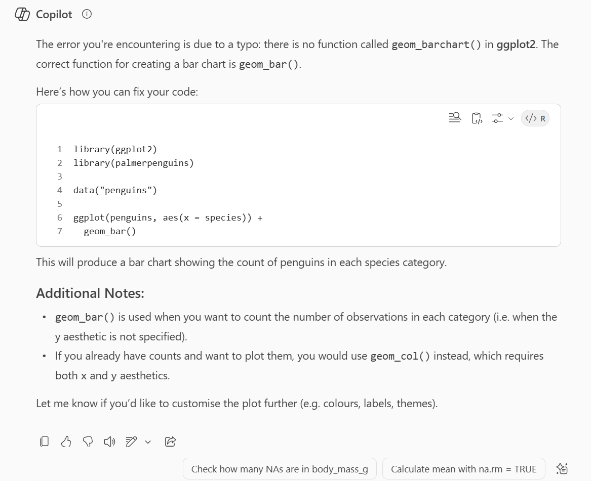
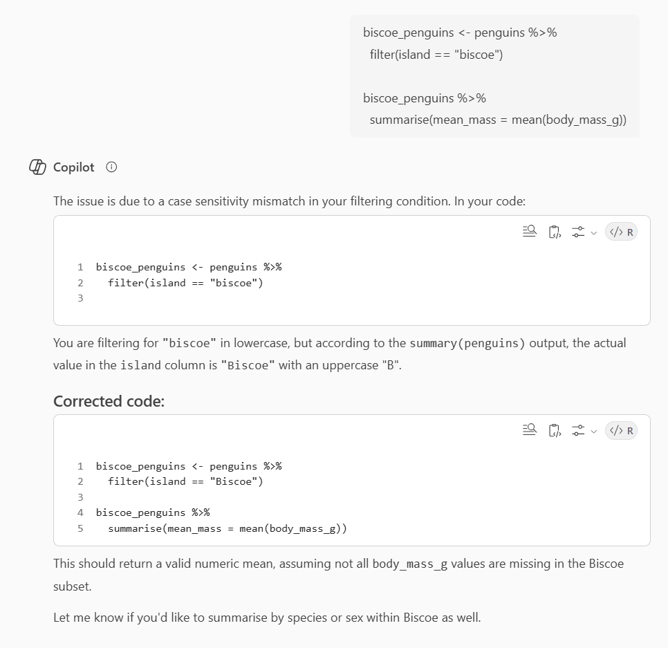
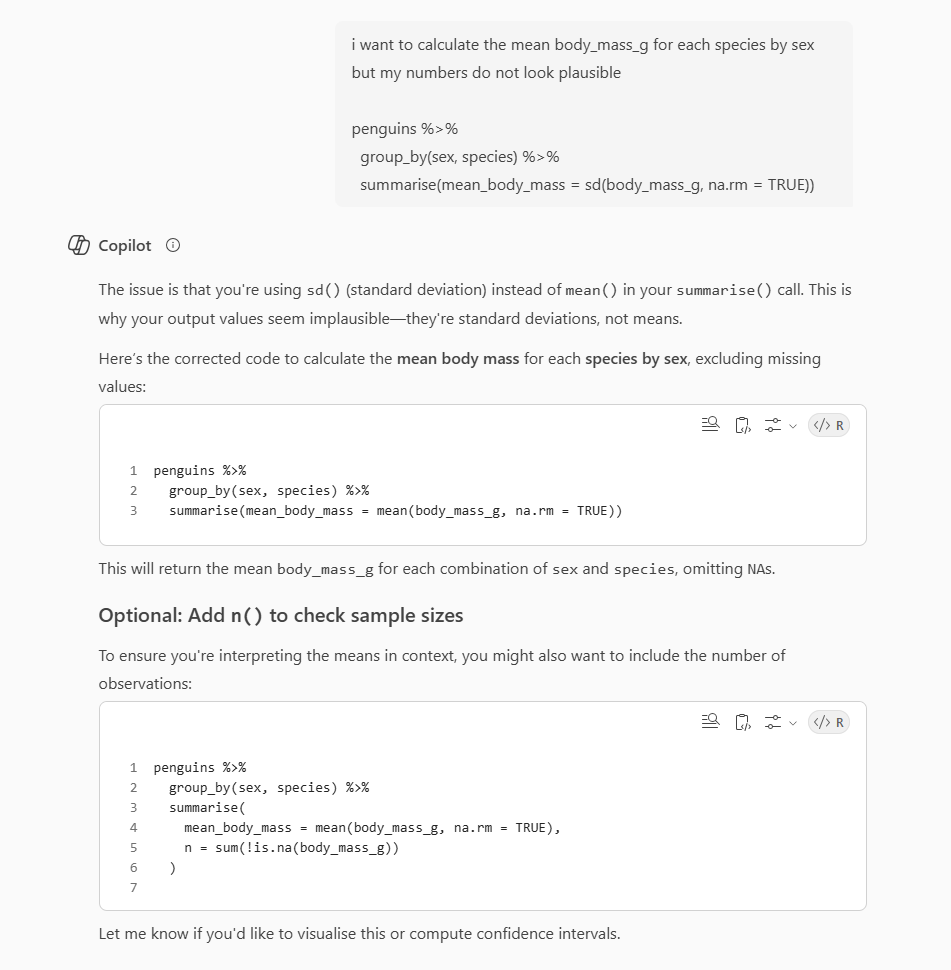

4 Error checking and debugging
Written by Emily Nordmann
In this chapter, you’ll learn how to use AI to help you identify and fix coding errors. I’d argue this is probably the best use case of AI - using it to help and debug code you’ve written yourself - because it’s human expertise that wrote the code, but with the AIs attention to detail and ability to spot missing commas.
AI is generally good at this task, although the more complicated your code, the more likely it is that it will run into trouble. This chapter will give a few examples to help you with your prompt engineering.
4.1 Activity 1: Set-up
So that you can reproduce the same errors, let’s create a reproducible example and load some packages and a dataset. Open an Rmd (not a script, we’ll use the Rmd in Activity 3) and run the below (you may need to install the package palmerpenguins if you don’t have it already).
4.2 Activity 2: Simple errors
Unlike the other chapters you don’t need to do any set-up, in fact, you can often just copy and paste the code and error in and it will figure out that you want it to fix it without even needing to explicitly ask.
Here’s a simple error where we have given it the wrong function name:
Error in geom_barchart(): could not find function "geom_barchart"- Give your AI of choice both the code and the error. One without the other is likely to result in a poor or incomplete answer (whether you ask a human or an AI).
All three AIs identified, explained, and fixed this error. Gemini also tried to give some additional information about the function, with links to more information, which is nice.

4.3 Activity 3: Contextual errors
Something that catches many people out is when the error is actually being caused by code further up your script rather than the bit that is results in the error.
For example, in this code, what we intended to do was to create a dataset that just has penguins from Biscoe Island and then calculate their mean body mass. This code will run, but it produces NaN as the value.
biscoe_penguins <- penguins %>%
filter(island == "biscoe")
biscoe_penguins %>%
summarise(mean_mass = mean(body_mass_g))| mean_mass |
|---|
| NaN |
If you just give an AI the code and the table and ask it to explain what’s happening, it will do its best but without knowing the dataset or what code has preceded it, it won’t give you the exact answer, although in this case it hints at it.
There’s a couple of things you can do at this point:
- Give the AI all the code you’ve used so far
- Give the AI more information about the dataset.
You can manually type out a description but there’s some functions you can use that can automate this.
summary() is useful because it provides a list of all variables with some descriptive statistics so that the AI has a sense of the type and range of data:
species island bill_length_mm bill_depth_mm
Adelie :152 Biscoe :168 Min. :32.10 Min. :13.10
Chinstrap: 68 Dream :124 1st Qu.:39.23 1st Qu.:15.60
Gentoo :124 Torgersen: 52 Median :44.45 Median :17.30
Mean :43.92 Mean :17.15
3rd Qu.:48.50 3rd Qu.:18.70
Max. :59.60 Max. :21.50
NA's :2 NA's :2
flipper_length_mm body_mass_g sex year
Min. :172.0 Min. :2700 female:165 Min. :2007
1st Qu.:190.0 1st Qu.:3550 male :168 1st Qu.:2007
Median :197.0 Median :4050 NA's : 11 Median :2008
Mean :200.9 Mean :4202 Mean :2008
3rd Qu.:213.0 3rd Qu.:4750 3rd Qu.:2009
Max. :231.0 Max. :6300 Max. :2009
NA's :2 NA's :2 str() is also useful because it lists the variables, their data type, and the initial values for each variable. However, that means that you are giving it at least some of the raw data so you have to be very careful if you have sensitive / confidential data and you must ensure that any use of AI is in line with your data management plan. Using Copilot Enterprise means the data won’t be stored and used to train the AI further so it’s potentially the best option (which is not to say it’s safe or problem free, please be careful and critical!).
tibble [344 × 8] (S3: tbl_df/tbl/data.frame)
$ species : Factor w/ 3 levels "Adelie","Chinstrap",..: 1 1 1 1 1 1 1 1 1 1 ...
$ island : Factor w/ 3 levels "Biscoe","Dream",..: 3 3 3 3 3 3 3 3 3 3 ...
$ bill_length_mm : num [1:344] 39.1 39.5 40.3 NA 36.7 39.3 38.9 39.2 34.1 42 ...
$ bill_depth_mm : num [1:344] 18.7 17.4 18 NA 19.3 20.6 17.8 19.6 18.1 20.2 ...
$ flipper_length_mm: int [1:344] 181 186 195 NA 193 190 181 195 193 190 ...
$ body_mass_g : int [1:344] 3750 3800 3250 NA 3450 3650 3625 4675 3475 4250 ...
$ sex : Factor w/ 2 levels "female","male": 2 1 1 NA 1 2 1 2 NA NA ...
$ year : int [1:344] 2007 2007 2007 2007 2007 2007 2007 2007 2007 2007 ...Finally, ls() provides a list of all the variables in a given object. It doesn’t provide any info on the variable type or sample, but that does mean it’s the most secure and depending on the task, this might be all the info you really need to give the AI. I would suggest starting with ls() and only scaling up if necessary (and your data isn’t sensitive):
[1] "bill_depth_mm" "bill_length_mm" "body_mass_g"
[4] "flipper_length_mm" "island" "sex"
[7] "species" "year" - Run
summary(biscoe_penguins)and give the AI the output so that it better understands the structure and contents of the datasets
If you haven’t spotted it by now, the error is that in the filter biscoe should be Biscoe with a capital B. It still doesn’t have the information it needs to tell you this explicitly, but it will get you very close. There is no shortcut for knowing your data.

4.4 Activity 4: Incorrect (but functional) code
Sometimes (often) when we write code, the issue isn’t that our code doesn’t work, but that it doesn’t do what we intended to do and we can’t figure out why.
For example, let’s say that we want to calculate the average body_mass_g for each species by sex. We’re feeling a bit lazy and we copy and paste in the following from a previous script we have:
| sex | species | mean_body_mass |
|---|---|---|
| female | Adelie | 269.3801 |
| female | Chinstrap | 285.3339 |
| female | Gentoo | 281.5783 |
| male | Adelie | 346.8116 |
| male | Chinstrap | 362.1376 |
| male | Gentoo | 313.1586 |
| NA | Adelie | 477.1661 |
| NA | Gentoo | 338.1937 |
We know something isn’t right here. Because we’re responsible researchers, we’ve taken time to understand our dataset and what plausible values should be and we know there’s no way that the average body mass of a penguin is 269 grams (unless the penguin is made of chocolate). But the code is running fine, we know it’s worked before, and we can’t see what we’ve done wrong.
You can ask the AI to help you but you can’t just give it the code and output, you also need to tell it what you intended to do. In this case, all three AIs correctly identified that I had used sd instead of mean. The more complex your code, the more information you will need to give it in order for it to help you find the error.

This is a good example of why there is no AI tool that allows you to skip understanding the data you’re working with and knowing what it is you’re trying to do.
4.5 Activity 5: Rmd errors
If you’re working in R Markdown or Quarto, sometimes the errors will stem from your code chunk settings or YAML.
In your Rmd file, create a new code chunk and copy and paste the following:
But then delete one of the final back ticks (`) from the code chunk.
The code is fine, it provides a simple count of the number of observations in the dataset. But if you try and knit the file, you’ll get a long ! attempt to use zero-length variable name. Copilot wasn’t that helpful because all of its suggestions relate to checking your code:
However, Gemini was more useful as one of its suggestions is indeed the solution - there’s a missing back tick at the end of the code chunk. In cases like this, it won’t give you a solution you can copy and paste but it will tell you what to go and look for.

I know I might be starting to sound like a broken record but please remember that artificial intelligence is not actually intelligent. It’s not thinking, it’s not making conscious decisions, it has no expert subject matter knowledge. No matter how helpful it is, you must always check the output of the code it gives you.
This book was written in Spring 2024 and should be considered a living document. The functionality and capability of AI is changing rapidly and the most recent advances may not reflect what is described in this book. Given the brave new world in which we now live, all constructive feedback and suggestions are welcome! If you have any feedback or suggestions, please provide it via Forms.